權益福利
本公司參照同業待遇、人力市場需求及本公司實際營運狀況訂定薪資制度給付予員工，並依物價指數及公司獲利狀況每年檢討員工的待遇與福利。
最高薪資與中位數薪酬如下所示：
- 國家/地區
- 台灣
- 最高個人之年度總薪酬(仟元)
- 3,842
- 員工（不包括該薪酬最高個人）年度總薪酬之中位數
- 904
- 比例
- 4.25
- 國家/地區
- 台灣
- 最高個人之年度總薪酬增加之百分比
- 0.93
- 員工（不包括該薪酬最高個人）年度總薪酬增加百分比之中位數
- 1.00
- 比例
- 0.93
正德海運之正式員工主要薪酬項目包括固定薪資、各項津貼、獎金、年終獎金及員工酬勞；職務別薪酬比例之差距係因年資及職別不同，以致工作獎金比例不同所致。截至報導期間年底，男性及女性基層人員標準薪資皆高於當地最低薪資，分別為當地最低薪資之 1.41 倍及 1.17 倍，其中男性與女性之最低薪資比有差異之原因為公司技術部門（敘薪較高）為男性居多，且目前部門主管以男性佔比較高，因此薪資比例稍有差異。
台灣
男性基層人員標準薪資與當地最低薪資的比例
1.41
台灣
女性基層人員標準薪資與當地最低薪資的比例
1.17
| 項目 | 2023年 | 2024年 | 2025年 | 與前一年度相比(%) |
|---|---|---|---|---|
| 非擔任主管職務之全時員工人數 | 45 | 44 | 50 | +13.64 |
| 非擔任主管職務之全時員工薪資總額 (仟元) | 37,632 | 43,484 | 50,431 | +15.98 |
| 非擔任主管職務之全時員工薪資「平均數」(仟元) | 836 | 988 | 1,009 | +2.13 |
| 非擔任主管職務之全時員工薪資「中位數」(仟元) | 773 | 902 | 904 | +0.22 |
|
註：
|
||||
員工退休制度及實施
本公司依照勞基法規定訂有退休辦法，以照顧員工退休後生活。依員工到職時間及選擇新舊制的年資而有不同。2005 年 6 月 30 日 ( 含 ) 以前到職者可以選擇新舊制退休金給付標準，之後到職之員工則適用新制退休金，自實施日起按月提撥 6% 至個人專戶。
人資單位提供員工申請退休相關資訊協助，至 2025 年止累積已有 6 位同仁依法申請退休。
員工完善福利
正德海運重視人才留任，除追求員工工作環境安全外，也注重員工身心健康，因此本公司依法成立福委會，並依規定提撥福利金並辦理員工福利事項及不定期舉辦親子活動旅遊及國內外員工旅遊等，同時也訂定福利辦法，員工均由本公司依法辦理勞工保險、全民健康保險與員工團體保險，並依相關法令享有保險給付權利，針對海外出差同仁，強化保險內容，每年公司為員工做健康檢查及教育訓練，鼓勵員工下班後健身運動，公司贊助經費補助成立社團活動( 靜態瑜珈，動態羽球 )，工作環境需求則提供員工夏季及冬季制服；獎金及禮金部分，公司發放員工本人及一等親親屬婚喪禮金及員工三節、生日禮金、特殊節日禮品、五一勞動禮品禮金等；船員有年節加菜金、體育活動獎勵金等，特殊情況下也提供之職工福利慰問金或撫卹金，且依公司每年營運情況及公司章程，分派員工酬勞給員工共享營運成果。
除了以上提及之福利，本公司也不定期參與公益福利團體舉辦各式活動，除增進同仁間互動頻率與情誼，建立一個快樂和諧及關懷社會的工作職場，有助提升員工向心力及生產力。
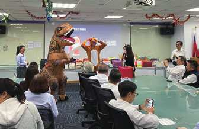
聖誕節交換禮物
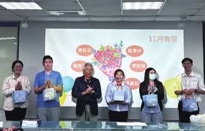
員工慶生
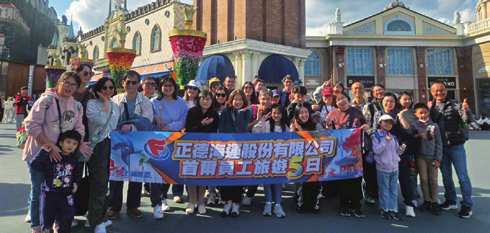
正德員工海外旅遊
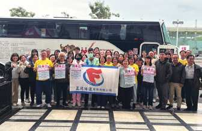
捐血活動
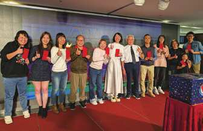
歡樂尾牙宴
員工滿意度調查
為了追求企業的永續發展，體現企業對員工的關懷與尊重，2025 年本公司進行員工滿意度調查，以了解員工對公司各方面的感受與看法，持續致力於打造多元發展的職場環境，協助同仁精進職務上必須的技能，並且建構友善工作環境，營造互動良好組織文化，希望讓同仁能在這個優質工作舞台發揮所長，與企業共同成長期望透過調查來建立更好的工作環境，以提升整體工作環境與組織效能。
數據呈現：滿意度光譜兩端差異顯著
調查結果：
會議空間使用滿意度僅2.84分，顯示現有空間配置與管理機制未能滿足同仁需求。
原因分析：
缺乏有效的預約機制導致空間衝突，且現有空間多為固定大型會議室，缺乏中小型或個人彈性討論區。
改善對策：
- 建置線上預約系統：已規劃開發專屬的「空間預約管理平台」，提供即時查詢、預約、取消與空間使用率數據儀表板，提升管理效率。
- 增設彈性溝通空間：針對小型團隊或個人隱私需求，改裝閒置區域為開放式討論區，增加空間應用靈活性。
預期效益：
解決空間資源分配不公與排程衝突的問題，提升會議室周轉率與同仁協作應用。
育嬰留停執行
依據「勞動基準法」、「性別平等工作法」之規定，本公司提供女性及男性員工產假、陪產檢假及育嬰假，並依據本公司之人事工作規則來實施員工育嬰留職停薪制度。同時依規定辦理員工育嬰留職停薪作業及復職相關流程。
本公司積極配合政府政策，鼓勵生育亦鼓勵符合育嬰資格之員工申請育嬰假，且保證復職後不影響其工作職務。2025 年，符合育嬰留職停薪申請資格人數計 4 人 ( 男性 2 名、女性 2 名 )，實際申請人數共計 0 人。近三年員工申請育嬰假情形整理如下表：
| 年度 | 2023 | 2024 | 2025 | ||||||
|---|---|---|---|---|---|---|---|---|---|
| 性別 / 合計 | 男性 | 女性 | 合計 | 男性 | 女性 | 合計 | 男性 | 女性 | 合計 |
| 符合育嬰留停申請資格人數A | 2 | 3 | 5 | 2 | 4 | 6 | 2 | 2 | 4 |
| 當年度實際申請育嬰留停人數B | – | 1 | 1 | – | – | – | – | – | – |
| 當年度育嬰留停應復職人數C | – | 1 | 1 | – | – | – | – | – | – |
| 當年度育嬰留停實際復職人數D | – | – | – | – | – | – | – | – | – |
| 前一年度育嬰留停實際復職人數E | – | – | – | – | – | – | – | – | – |
| 前一年度育嬰留停復職後持續工作一年人數F | – | – | – | – | – | – | – | – | – |
| 當年度育嬰留停復職率%(D/C) | – | – | – | ||||||
| 當年度育嬰留停留任率%(F/E) | – | – | – | ||||||
|
計算方式：
|
|||||||||
人權主張
人權政策
正德海運為善盡企業社會責任，堅定遵循「聯合國世界人權宣言」、「聯合國商業與人權指導原則」、「聯合國全球盟約」「國際勞工組織公約」等國際人權公約，尊重國際公認之基本人權，包括結社自由、關懷弱勢族群、禁用童工、消除各種形式之強迫勞動、消除僱傭與就業歧視等，杜絕任何侵犯及違反人權的行為，並使公司全體員工獲得合理、平等與有尊嚴的對待。
正德海運人權政策適用於本公司、所屬船舶及子公司之全體同仁。遵守營運所在地之勞動、性別平等工作法相關法規並制定有關人權保障、勞動政策及執行相關措施。
正德海運人權政策說明如下：
01
多元包容性與平等機會
1.本公司應遵守相關法規，保障性別平等、工作權及禁止任何形式之歧視。
2.為履行人權保障責任，本公司建立完善的管理政策與程序，具體作為包括：
- 提出企業之人權政策或聲明。
- 定期檢視人權政策之執行成效。
- 評估公司營運活動及內部管理對人權之影響，並訂定相應之處理程序。
- 涉及人權侵害時，建立公開透明之利害關係人溝通與處置流程。
本公司尊重勞動人權，落實結社自由、集體協商權、關懷弱勢族群、禁用童工、消除強迫勞動及就業歧視等核心價值。我們確保人力資源政策不受性別、種族、社會階級、年齡、婚姻與家庭狀況等因素影響，保障同仁於就業、雇用條件、薪酬、福利、訓練、考評與升遷機會之公平與公允。
針對危害勞工權益之情事，本公司建置完善且暢通之申訴機制，確保申訴過程公正、透明。內部申訴管道力求簡明與便捷，並對同仁之申訴予以嚴謹、妥適之回應，全面維護同仁合法權益。
02
健康安全職場
本公司致力提供員工安全與健康之工作環境，包括提供必要之健康與急救設施，並主動降低對同仁安全與健康之危害因子，以預防職業上災害。本公司定期實施全員安全與健康教育訓練。
03
合理工時
為確保同仁身心健康並防範工時過長之風險，正德海運明訂工作時間與延長工時之管理規範，並定期關心及管理員工出勤狀況。
04
和諧勞資溝通
本公司致力營造勞資和諧共榮之氛圍，設有多元、開放溝通管道並定期召開勞資會議，搭建勞資雙向即時對話平台，以有效調解意見差異、凝聚組織共識。
05
結社自由
本公司尊重同仁依法結社之權利，同仁可自由組織及參與各類社團。公司亦積極鼓勵同仁投入多元社團活動，以豐富同仁之工作與生活平衡。
人權盡職調查
人權盡職調查作業流程
-
人權政策
-
人權識別風險
-
預防風險及減緩衝擊
-
追蹤、改善
正德海運制定正德海運人權政策，識別目前各界重視主要人權議題，盤點公司內部制度，制定相關政策預防人權風險事件發生，定期評估人權政策並做適當調整，減緩人權衝擊，並不定期追蹤人權管理政策及行動方案，確保人權管理有效落實，降低風險衝擊。
為落實人權制度之保障，本公司明定《人事工作守則》、《工作場所性騷擾防治措施、申訴及懲戒辦法》與《誠信經營守則》等內部規範，並建置獨立申訴流程、檢舉信箱及專線，提供同仁及外部利害關係人暢通且受保護之溝通管道。
根據經濟部推動的「臺灣企業供應鏈尊重人權方案」，合併營收達新台幣 500 億元以上的上市櫃製造業，自 2026 年起必須強制執行人權盡職調查（HRDD），並將結果揭露於永續報告書中。本公司 2025 年因大量招募專業人才針對就業無歧視等法規要求，除辦理教育訓練宣導外，更深入各單位訪查了解，檢視結果 : 2025 年度正德海運全體營運及招募流程，皆無違反《勞動基準法》及《就業服務法》之情事。同時，未收到任何關於工作職場歧視、不法侵害或違反人權行為之檢舉案件。
平等就業及勞資和諧
正德海運深信「多元、平等、包容（DEI）」是企業永續發展的基石。在人才招募與甄選階段，本公司嚴格禁止任何形式之就業歧視，以保障國民就業機會平等。
我們將《就業服務法》第 5 條及《性別平等工作法》之精神全面內化至招募制度中。無論在招募條件、甄試、進用、分發、配置、考績或陞遷等各個職涯階段，本公司皆確保同仁與求職者不受種族、階級、宗教、性別、性傾向、年齡、婚姻狀況或身心障礙等因素影響，提供絕對公平、公正的競爭平台，齊心建構和諧多元的勞資夥伴關係。
船員派遣也要求船員仲介公司必須遵照海事勞工公約規範 A1.1 規定；「船員最低年齡不得小於 16 歲」；為滿足公約及法規規定，本司安全管理系統程序書 FBP-06-01 船員僱用辦法中規範「不得聘用 18 歲以下船員」，確保未成年員工之身心健康與安全，禁止安排危險性之工作。
本公司聘用船員不分國籍以及職等公平給予每位船員每日同等金額餐費，並且符合海事勞工公約規則，船員有權利以正當管道申訴，申訴管道以及聯絡資訊皆張貼於船上公布欄以及各船員住艙，以確保船員清楚自身權益。
船員則依據海事勞工公約規則訂定之安全管理系統程序書 FBP-07-21 之工作時間，強制滿足此公約規則之 2.3 條工作和休息時間：船員最長工作時間為任何 24 小時內不超過 14 小時，且任何７天內不得超過 72 小時；最短休息時間為任何 24 小時不得少於 10 小時，且任何 7 天內不得少於 77 小時，休息時間最多可分為 2 段，其中 1 段至少要 6 小時。
若發生不平等或不合理事件，本公司設有如電話專線、信箱等申訴管道及對事件調查當事者防止再發生及調動單位或懲處等相關對應措施；船員有權利以正當管道申訴以確保船員自身權益。
船員心靈輔導 24/7 免費諮詢專線
由 SSM P&I CLUB 提供
- 電話
- 0049 174 7047788（可透過 WhatsApp 免費 WiFi 通話）
- 說明資源
- SSM 船員心理健康資源
季關懷
每年 3 月、6 月、9 月、12 月，透過季關懷，詢問船端是否有需要協助。
- 3月第 1 季
- 6月第 2 季
- 9月第 3 季
- 12月第 4 季
2025 年度
性別歧視投訴件數
0
2025 年度
違反人權事件發生件數
0
船員申訴流程圖
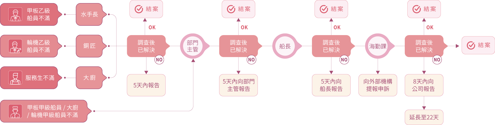
支持結社自由
正德海運尊重員工於法律上所賦予之集會結社自由與權利，並致力於提供暢通的勞資溝通管道，包括勞資會議、職業安全衛生委員會議等；本公司按法律規範成立福利委員會組織及定期召開勞資會議，勞資關係之相關議題可以提出建議案。每月利用動員月會，作為員工與公司在意見反映及溝通時機，反應途徑上則有設置「公司申訴意見箱」及專屬溝通電子信箱「hrm@franbo.com.tw」，提供申訴管道，以維護員工合法權益。同仁如對公司規章制度、行政措施、人事法令或其他影響工作士氣或權益之情事，得向公司提出申訴處理，如同仁對其申訴處理結果仍有疑義時，可進一步再申訴或複議。以期能整合所有資源，戮力齊心，朝向共同追求的目標。
本公司目前尚無工會組織，因此未有員工簽署集體協議；正德海運於在船員的雇用契約中提及現用的團體協約屬於船員雇用契約的一部分。
爭取合理的工作環境、權益與發展，對於協助企業經營平衡發展，擴大企業在社會參與上的層面與深度，都頗有助益，為促進同仁情感融合、厚植職場活力，公司全力支持同仁依個人興趣自組社團，並提供相應資源與協助。
在公司積極推廣與同仁踴躍參與下，內部運動風氣盛行，陸續於 2022 年成立瑜珈社、2024 年底成立羽球社。社團活動不僅基層同仁參與踴躍，高階主管亦一同投入，董事長更親自共同參與，展現「由上而下、全員齊心」的健康職場文化，攜手朝向企業永續經營之共同目標邁進。
本公司一向注重船員身心健康，正常時間除提供育樂設備也鼓勵利用閒暇時間舉辦健康活動或運動。
本公司為促進船員身心健康，並發展聯合國永續目標 3.8，船隊自辦的康樂活動，包括足球比賽、射箭等，2025 年度共計 14 場。
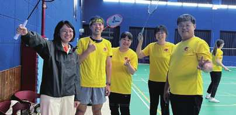
羽球社
瑜珈社
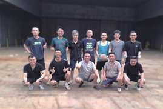
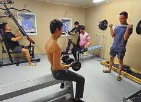
促進健康運動
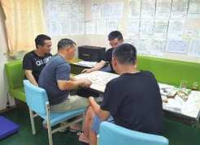
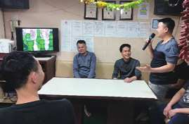
休閒娛樂
員工福利措施.退休制度.薪酬
1. 員工福利措施
- 給假：週休二日。
- 特別休假：員工服務滿半年後享有特別休假，日數依年資累積而增加。
- 保險：勞工保險、全民健康保險、團體保險、員工國外出差暨住院傷害醫療險及重要職員暨董監事責任險。
- 各類補助費：結婚禮金、奠儀、傷病慰問金、急難救助及生育禮金。
- 保健：定期健康檢查。
- 職工福利：年終尾牙、旅遊活動、五一福利禮品或禮券及慶生禮金及禮物及不定期午茶點心。
2. 退休制度與其實施情形
本公司依據「勞工退休條例」訂有確定提撥之退休辦法，適用於本國籍員工。每月按不低於薪資之6%提繳員工退休金至勞保局員工個人帳戶，員工退休金之支付依員工個人退休金專戶及累積收益之金額採月退休金或一次退休金方式領取。適用委任制的退休金給付以保險單一次或分期領取之，目前尚無人員退休。
3. 經營績效與員工薪酬連結
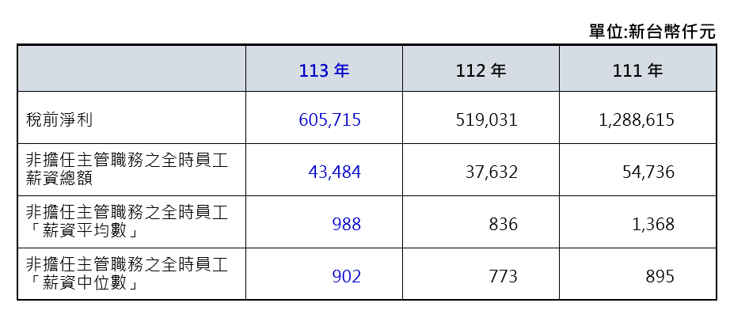